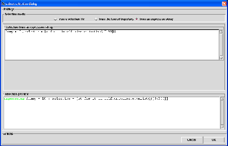

Next: Deuteration selection
Up: Subset selection
Previous: selection from the loaded
Contents
To perform a subset selection from an expression string, you have to click on the from an expression string
radiobutton. A dialog will be displayed in the underneath frame from which you will enter a valid Python expression
that must declare the selection variable as a list of atoms of the loaded universe. The variable
self.universe will be used as a reference for that universe (see Fig. 4.23).
Figure 4.23:
The subset selection dialog for a selection from an expression string.
|

|
Once an expression string has been entered press Return to register it. The constructed selection string that will be used by nMOLDYN for this kind of
selection will be displayed in the Selection preview entry at the bottom of the dialog with highlighted keywords.
Here are some examples of valid expression strings that can be entered:
- selection = self.universe.atomList()[0:10]: will select the ten first atoms of the universe,
- selection = [at for at in self.universe if at._mass 10]: will select only the atoms of the universe whose
mass is greater than 10 amu.
Next: Deuteration selection
Up: Subset selection
Previous: selection from the loaded
Contents
pellegrini eric
2009-10-06